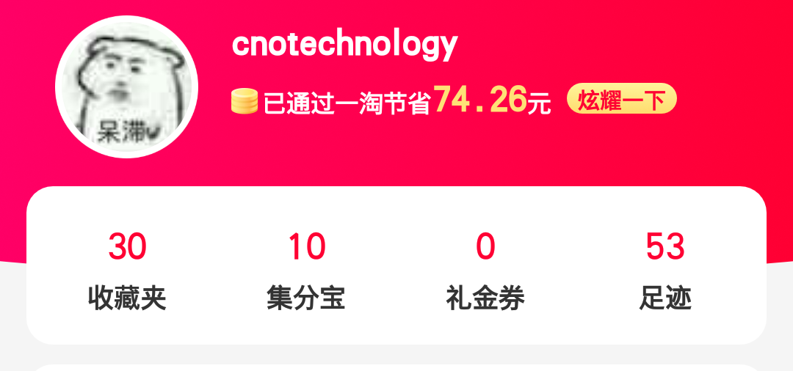
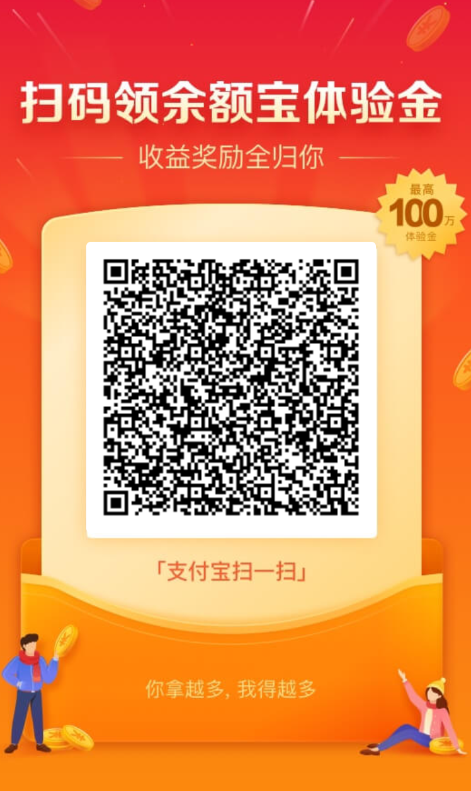
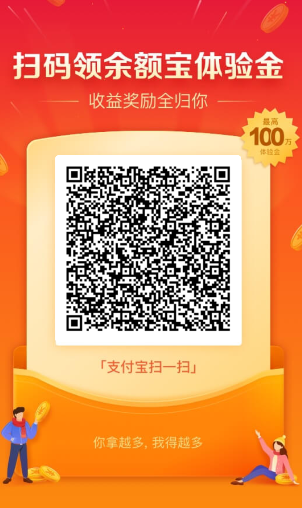

也许扫码付费过于直白
我们提供了一些额外的捐赠方式，使用这些方式捐赠同样能被记录到捐赠列表中这些方式通常来自于阿里系应用的双赢性质推广
不用担心，Edgeless的纯净特性不会因为换一种方式恰饭而改变
1、通过下载并使用一淘来捐赠我们
通过一淘下单商品（一淘自动同步淘宝购物车）即可使用该礼金券
了解详情

1、用“淘宝”APP挑选商品，并添加到购物车。当然你也可以直接在“一淘”内选购商品
2、打开“一淘”APP，一淘的购物车会自动同步淘宝的购物车
3、进入购物车，商品下方提示“点击获取返利约xx元”，点击准备购买的商品然后返回，提示文字变成了“一淘下单约返xx元”，相当于完成一淘官方指定的刷浏览量任务
4、选中商品并结算。收到商品并确认收货后一段时间，集分宝会发放至你的账户。在使用同账户支付宝支付时，集分宝会自动抵扣现金
我们会相应地收到来自一淘的礼金券奖励，并更新捐赠列表。这表示了您对Edgeless项目的支持与鼓励，我们非常感谢您的帮助
只有在您第一次使用一淘并完成首次下单之后，Edgeless才会收到相应额度的一淘礼金券（是的，不是现金）。因此请不要忘记使用一淘下单哦
2、通过扫码领红包 / 获取余额宝体验金来捐赠我们
或在支付宝搜索框中依次搜索
 

了解详情
用过支付宝的应该都了解扒